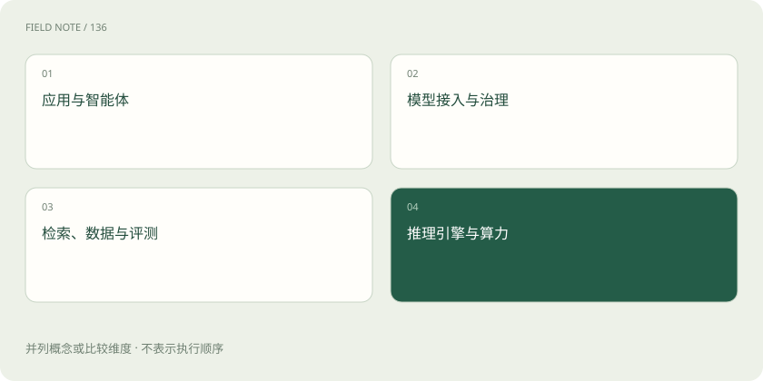

先读哪些知识
先用一个类比理解
搭餐厅需要菜谱、厨师、厨房、收银台和质检。它们不是竞争同一个位置，AI 市场里的模型、应用平台、网关和引擎也经常需要配合。
类比只帮助建立直觉，不等同于技术的完整机制。
一图看懂

从用户结果向下拆
应用层交付客服、搜索、分析等能力；编排层组织工作流与工具；模型服务提供生成和理解；数据层提供知识与状态；基础设施运行和治理这些组件。一个产品可能覆盖多层，分类是理解工具，不是严格边界。
代表项目是例子，不是排名
模型与数据生态可看 Hugging Face；应用编排可看 LangChain、Dify；网关可看 LiteLLM；检索可看 Milvus、pgvector；推理服务可看 vLLM、SGLang；追踪评测可看 Langfuse、MLflow。职责存在交叉，具体功能与许可应查当前官方文档。
选型问六个问题
它解决哪一个具体问题？能否满足质量门槛？与现有数据和权限怎么集成？延迟与成本怎样测？故障时如何恢复与迁移？许可证和数据政策是否允许预期用途？不要只凭演示视频或排行榜决定。
放进真实场景
SCENARIO
只想个人阅读资料，不一定需要自建 GPU 集群；企业已有数据库，也不一定必须新增独立向量数据库。先确定需求，再判断是否需要新增组件。
别踩这个误区
这一页是技术职责索引，不是采购推荐或市场份额报告。项目能力与商业条款会变化。
想一想
一个 AI 产品接入了很多模型，是否就等于有自研模型？
不是。接入、部署、训练和自主研发属于不同能力。
关联阅读
资料与边界
本文为原创知识讲解。类比和图示经过简化；示例数字不代表实测或报价。整理日期：2026-11-04。文末列出对应技术的原始资料，具体功能与版本支持请以原文为准。